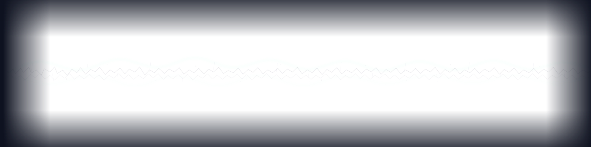

You train. You exercise. You follow the program. And somewhere between the effort and the result, there's a gap you can't close. Not injury. Not laziness. Something quieter. A void in your body's response. A sense that the volume keeps increasing but the signal isn't getting clearer.
You've tried more structure. More discipline. More information. None of it closed the gap — because the gap was never about effort.
The problem was never what you were doing. It was what you couldn't hear inside while you were doing it.
Your body is not a machine that needs better programming. It is a signaling architecture — connective tissue carrying vastly more sensory channels for internal state than for position. Tension, temperature, pressure, chemical balance, force, vibration. All broadcasting. Continuously. Wired overwhelmingly for sensing condition, not locating limbs.
Most strength training addresses one channel — movement. Reps, sets, load. BASEWAVES reads three channels simultaneously: the metabolic state that fuels your processing, the movement patterns that carry your force, and your organizational intelligence that determines how both express.
Metabolism fuels. Movement carries. Matrix organizes.
These channels were never separate inside your biology. The programming was.
More effort won’t fix what was never an effort problem.
Your body processes muscle gains and fat loss through the same channels it processes stress, fuel, and uncertainty.
How you channel stress is the problem. Not the program. Not the load. Not the exercise.
If you've been told to push harder when pushing harder drains you.
If you sense the problem lives upstream of every program you've tried.
If your body gets stronger some weeks and stalls others and nobody can explain why.
Then you're not looking for another program. You're looking at fine-tuning your other channels.